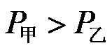
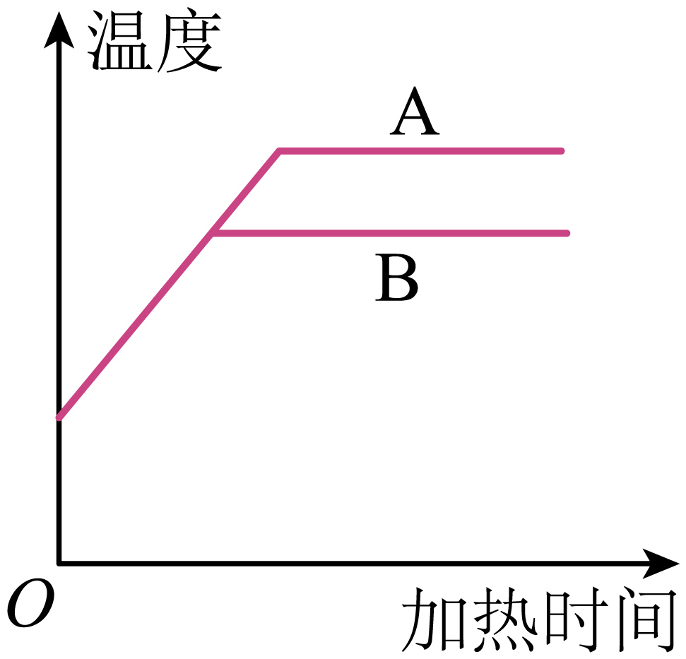
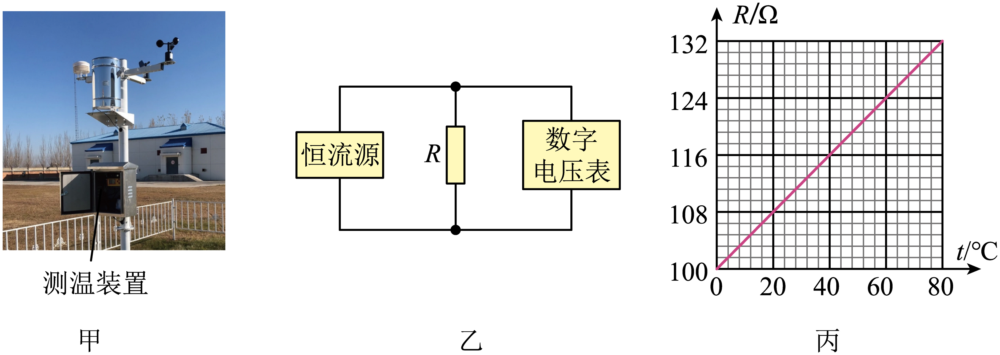
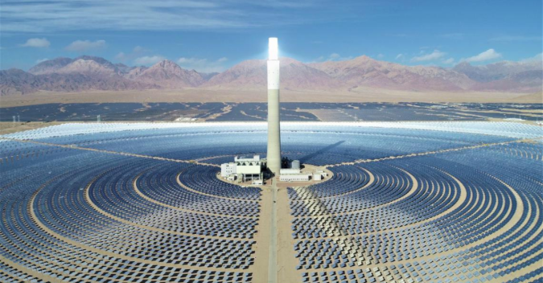
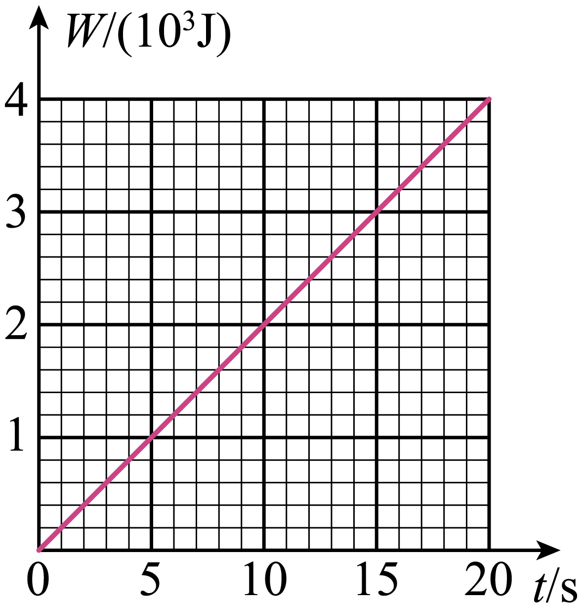
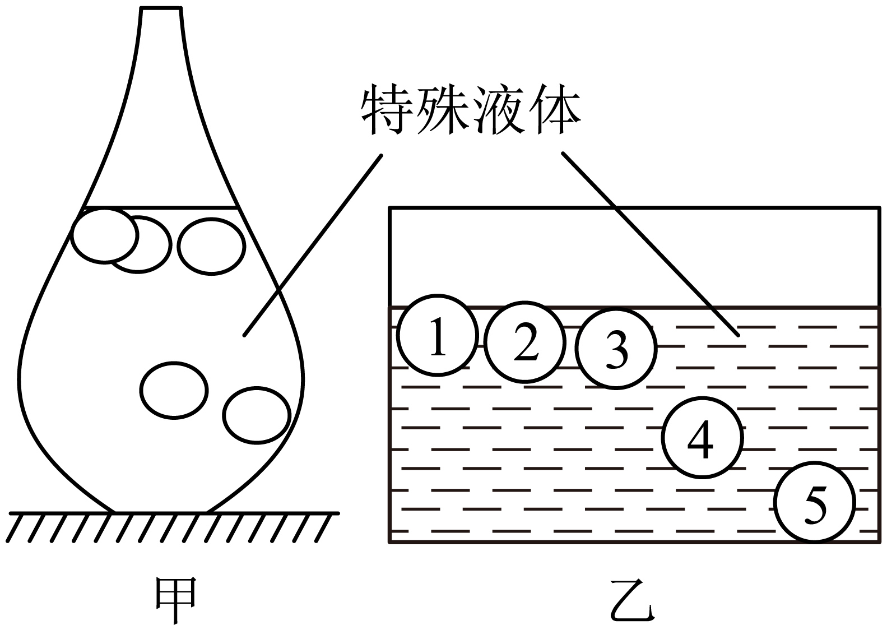

2024年北京市中考物理试题 · 选择题 第11、12、13、14、15题
11. 在两个相同的烧杯中分别装有两种液体A、B，其质量；用额定电压相同的甲、乙两个电加热器分别加热液体A、B，电加热器的额定功率

，它们均正常工作。液体A、B的温度随加热时间变化的关系如图所示。不考虑热量损失，下列说法正确的是（ ）
A. 液体A的沸点等于液体B的沸点
B. 电加热器甲 电阻丝阻值大于乙的电阻丝阻值
电阻丝阻值大于乙的电阻丝阻值
C. 相同时间内液体A吸收的热量等于液体B吸收的热量
D. 液体A的比热容大于液体B的比热容
12. 图甲为自动气象站中的测温装置，它的测温电路可简化为图乙，其中的“恒流源”是一个特殊电源，电流大小由电源内部结构决定，当电阻R变化时，通过R的电流大小保持不变。电阻R的阻值随温度的变化规律如图丙所示，通过数字电压表的示数可反映环境的温度。某次环境温度从20℃上升到30℃，电压表的示数变化了8mV。当温度的变化值相同时，电压表示数的变化值越大，该测温装置的灵敏度越高。下列说法正确的是（ ）

A. 每升高1℃，R的阻值增大1.65Ω
B. 通过R电流为20mA
C. 环境温度为20℃时，电压表的示数为216mV
D. 若要增大该测温装置的灵敏度，可换一个电流值更小的恒流源
13. 如图所示是我国西部某熔盐塔式光热电站，上万面镜子将太阳光准确地反射到高塔顶端，太阳光的能量被塔顶的熔盐吸收，熔盐带着这些能量到达厂房，将水加热成水蒸气，水蒸气推动汽轮发电机发电。下列说法正确的是（ ）

A. 塔式光热发电站是将太阳能直接转化为电能
B. 塔顶的熔盐吸收太阳光的能量，内能增大
C. 汽轮发电机发电是电磁感应现象的应用
D. 不同位置的镜子将太阳光反射到塔顶都遵循光的反射定律
14. 用某滑轮组提升重物时，绳子自由端拉力做功随时间变化的关系如图所示，在20s内绳子自由端竖直匀速移动16m，重物竖直匀速上升4m。已知动滑轮总重100N，提升的物体重800N。关于该过程，下列说法正确的是（ ）

A. 绳子自由端拉力的功率为200W
B. 额外功为400J
C. 绳子自由端拉力的大小为250N
D. 滑轮组的机械效率约为88.9%
15. 图甲为一彩球“温度计”，其密闭玻璃容器内装有一种特殊液体，随着温度升高，这种液体的密度会减小。液体中有5个挂有温度标牌的彩球，彩球体积（包括标牌）相等，其热胀冷缩可以忽略。当有彩球悬浮时，悬浮的彩球标牌上的温度值就是所测得的当前环境温度。图乙为这个温度计的示意图，编号为4的彩球标牌所标温度值为22℃，相邻编号的彩球标牌上的温度值间隔为2℃。下列说法正确的是（ ）

A. 彩球4在22℃时所受浮力大于18℃时所受浮力
B. 当环境温度处于该温度计可测得的最低温度时，5个彩球均漂浮
C. 若有2个彩球漂浮，3个彩球沉底，则环境温度t满足24℃<t<26℃
D. 要增大该温度计能测得的最高温度，可增加一个与彩球1体积相等、质量更小的彩球